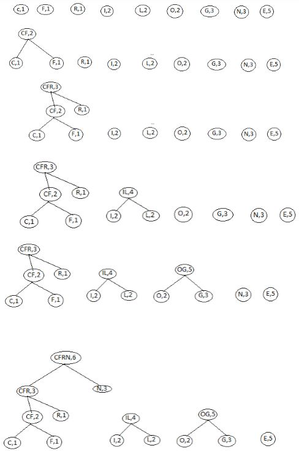

The following table shows all the symbols with their frequencies in ascending order:
C-1, E-5, F-1, G-3, I-2, L-2, N-3, O-3, R-1
The following are the different stages of construction of Huffman tree:

Hence, the Huffman tree is constructed as shown in the last figure.